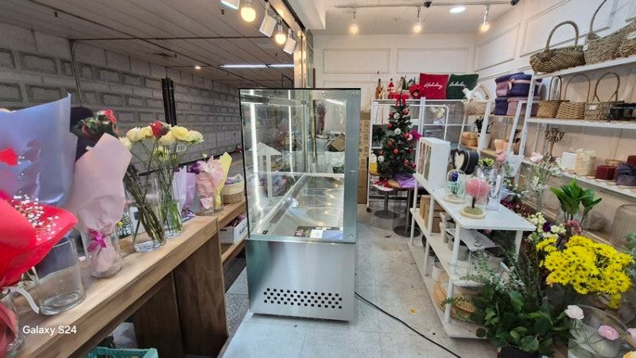
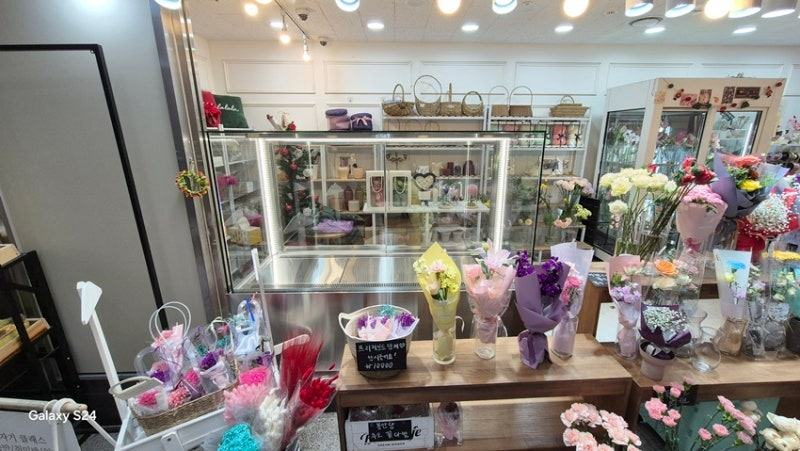
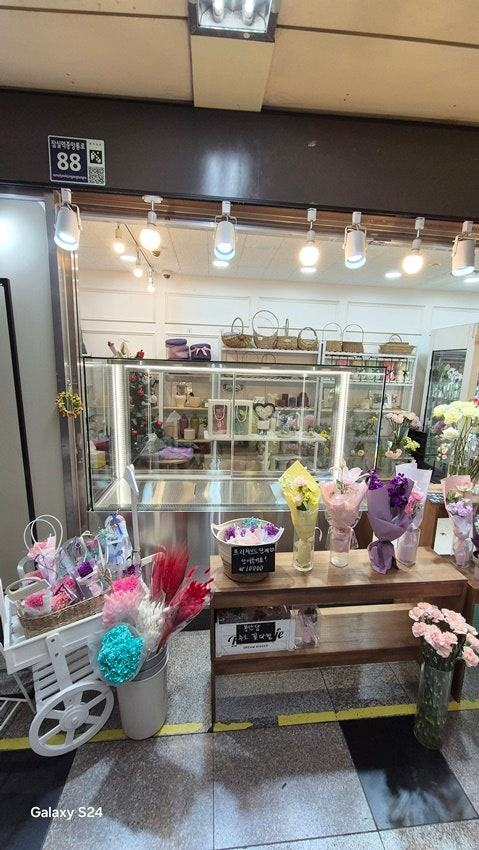
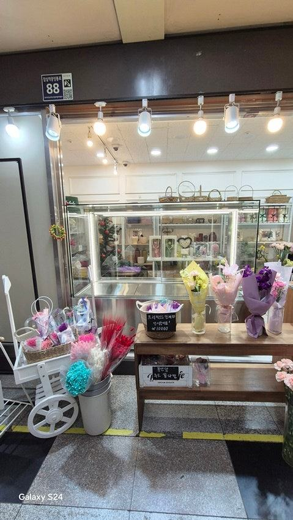
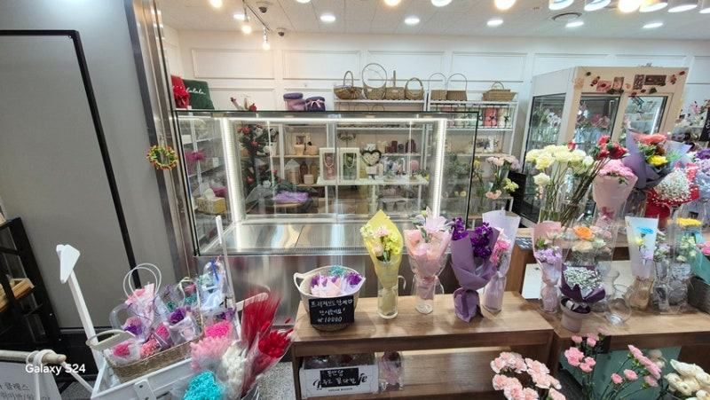
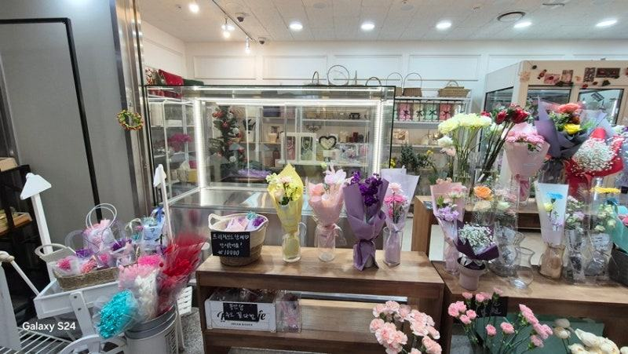
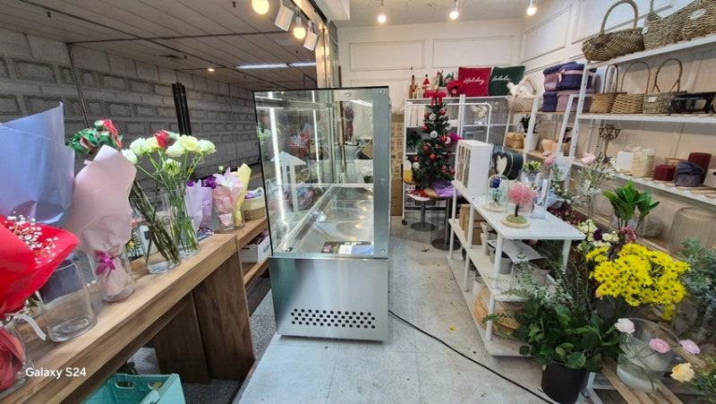
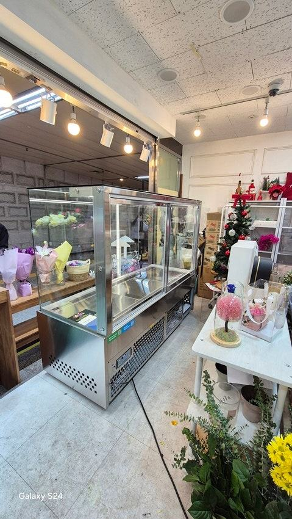
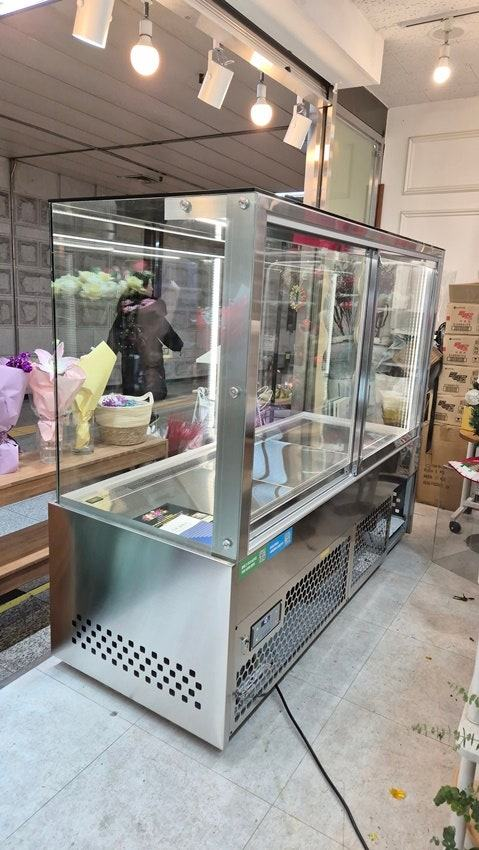
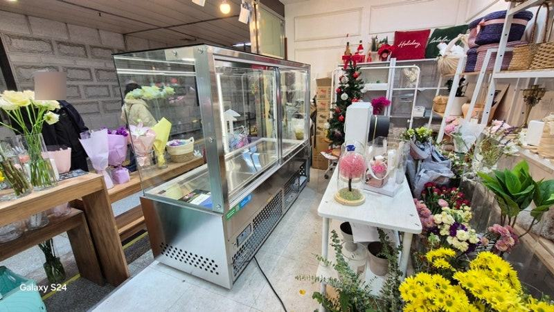

꽃냉장고
꽃냉장고 진열, 칸 나누기와 버킷 놓는 순서

꽃냉장고는 일반 절화와 열대 식물·난류처럼 원하는 온도가 다른 꽃을 칸이나 구역으로 나누고, 키 큰 꽃은 뒤쪽에 짧은 꽃과 완성 꽃다발은 앞쪽에 두는 순서로 진열하시면 됩니다. 버킷 사이를 조금씩 띄워 냉기가 돌 길을 남기고, 먼저 들어온 꽃을 앞으로 빼 두는 것만 지켜도 꽃이 더 오래 버팁니다.
안녕하세요. 꽃집 매장에 맞춰 꽃냉장고를 설계하고 제작하는 한성쇼케이스입니다.
새벽 시장에서 골라 온 꽃을 냉장고에 넣을 때, 빈자리에 버킷을 하나씩 채워 넣다 보면 어느새 안이 빽빽해지고 손님은 무엇이 있는지 한눈에 보기 어려워집니다.
사장님도 필요한 꽃을 찾느라 문을 오래 열어 두게 되죠.
꽃냉장고 진열은 보기 좋게 놓는 일이면서 동시에 꽃의 수명을 지키는 일입니다. 같은 냉장고 안에서도 위치에 따라 온도와 바람이 조금씩 다르기 때문입니다.
오늘은 꽃냉장고 칸을 어떻게 나누고 버킷을 어떤 순서로 놓으면 좋은지 정리해 드리겠습니다.
1. 온도대로 구역 나누기
꽃은 종류마다 편안한 온도가 다릅니다. 장미, 카네이션 같은 일반 절화는 5~8℃ 정도에서 많이 보관하지만, 열대 식물과 난류는 10~13℃처럼 조금 높은 온도를 좋아하고 너무 차가우면 냉해를 입기 쉽습니다.
냉장고가 여러 칸으로 나뉘어 있다면 열대 식물과 난류는 덜 차가운 칸에 두세요. 한 칸짜리라면 냉기가 직접 닿는 토출구 앞이나 냉각기 근처를 피해, 바람이 부드러운 쪽에 따로 모아 두는 것이 좋습니다.
계절에 따라 매장 실내 온도가 달라지면 같은 설정값이라도 문을 열 때마다 들어오는 공기가 다릅니다. 한여름과 한겨울에는 칸별 온도를 한 번씩 확인하고, 예민한 꽃의 위치를 조정해 주세요.
- 일반 절화와 열대·난류를 구분해 두세요.
- 예민한 꽃은 토출구 앞을 피하세요.
2. 키 순서와 색 흐름
키 큰 꽃은 뒤쪽, 짧은 꽃은 앞쪽에 두면 손님이 유리 너머로 모든 꽃을 한 번에 볼 수 있습니다. 반대로 놓으면 뒤쪽 꽃이 가려져 손님이 묻기 전까지 팔리지 않는 꽃이 생깁니다.
색도 흐름을 만들어 주면 냉장고가 하나의 진열장처럼 보입니다. 흰색과 연한 색에서 진한 색으로 이어지게 놓거나, 계절 주력 꽃을 손님 눈높이 가운데에 모아 두면 시선이 자연스럽게 그쪽으로 갑니다.
행사 시즌에는 주력 꽃 몇 가지를 한 칸에 넉넉하게 모아 두는 것도 방법입니다. 같은 꽃이 풍성하게 보이면 손님이 고르기 쉽고, 사장님도 재고를 한눈에 파악할 수 있습니다.


3. 완성 꽃다발과 낱개 절화 구분
미리 만들어 둔 꽃다발과 꽃바구니는 손님이 바로 들고 갈 수 있도록 문 가까운 앞쪽이나 별도 칸에 두세요.
포장지와 리본이 버킷 물에 닿으면 금방 젖고 구겨지니 받침 선반을 따로 쓰는 것이 좋습니다.
낱개 절화는 사장님이 작업할 때 꺼내기 쉬운 쪽에 둡니다. 작업대와 가까운 문 쪽에 자주 쓰는 소재를 모아 두면 문을 여는 시간이 짧아져 냉기 손실도 줄어듭니다.
- 완성품은 앞쪽·받침 선반에 두세요.
- 자주 쓰는 소재는 작업대 쪽 문 가까이에 두세요.
4. 냉기 길과 선입선출
버킷을 벽과 유리에 바짝 붙이거나 서로 꽉 붙여 놓으면 냉기가 돌 길이 막혀 안쪽 꽃이 먼저 지칩니다.
버킷 사이를 조금씩 띄우고, 꽃잎이 유리에 닿지 않게 놓아 주세요. 유리에 닿은 꽃잎은 결로로 쉽게 상합니다.
새로 들어온 꽃은 뒤쪽에, 먼저 들어온 꽃은 앞쪽에 두는 선입선출도 매일 지켜 주세요. 시든 꽃이나 떨어진 잎은 바로 빼내야 주변 꽃까지 빨리 시드는 것을 막을 수 있고, 배수구가 막히는 것도 예방됩니다.
마감 때는 버킷 물이 탁해지지 않았는지 보고, 물을 갈면서 버킷 바깥에 흘린 물기도 닦아 주세요. 바닥에 고인 물은 냉장고 안 습도를 지나치게 높여 결로와 곰팡이의 원인이 됩니다.
체크리스트
- 일반 절화·열대·난류 구역 분리
- 토출구 앞에 예민한 꽃 두지 않기
- 키 큰 꽃 뒤, 짧은 꽃 앞
- 완성 꽃다발 받침 선반
- 버킷 간격과 유리 닿음 확인
- 선입선출과 시든 꽃 정리
현장에서 자주 보는 경우: 모양만 보고 고른 진열장 때문에 꽃 관리가 어려운 매장
진열장을 외관만 보고 골랐다가 온도가 고르지 않거나 청소하기 불편해 꽃 관리가 어렵다는 상담을 받을 때가 있습니다.
쇼케이스진열장은 손님 시선을 사로잡는 디자인과 함께, 진열한 상품을 오래 신선하게 지키는 온도 유지와 위생 관리가 함께 갖춰져야 제 역할을 합니다.
그래서 설계 단계에서는 디자이너가 현장을 직접 보고 매장의 의견을 담아 구성을 정하고, 제품은 극한 상황에서도 문제없이 작동하는지 확인하는 119가지 품질 테스트를 거쳐 출고합니다.
칸 구성과 선반 높이를 처음부터 진열 방식에 맞춰 정해 두면 오늘 소개한 진열 순서를 지키기도 훨씬 쉬워집니다.









자주 묻는 질문
꽃냉장고 안에 과일을 같이 넣어도 되나요?
과일 중에는 꽃을 빨리 시들게 하는 에틸렌 가스를 많이 내는 종류가 있어 함께 두지 않는 것이 좋습니다.
꽃냉장고는 꽃만 보관하시길 권해 드립니다.
버킷 높이가 제각각인데 선반을 바꿀 수 있나요?
맞춤 제작이라면 쓰시는 버킷 높이와 꽃대 길이에 맞춰 선반 높이를 정할 수 있습니다. 주로 쓰는 버킷 규격을 알려 주세요.
칸 구성을 바꾸고 싶으면 상담받을 수 있나요?
판매하는 꽃 종류와 진열 방식을 알려 주시면 맞는 칸 구성을 안내해 드립니다. 대표전화 031-986-2458로 문의해 주세요.
매장 조건에 맞춰 만드는 한성쇼케이스
원하시는 제품 사진과 설치할 공간 사진만 보내 주셔도 매장에 맞는 구성을 추천해 드립니다.
- 전국 240여 개 A/S 전담 센터 운영
- 본사 대량 자재 매입으로 품질 대비 합리적인 가격
- 유럽제·삼성 냉각 콤프레셔 적용
- 국내 최초 쇼케이스 전문 디자이너 상주
매장 폭과 원하는 진열 구성을 알려 주세요. 실측과 견적을 안내해 드립니다.
031-986-2458